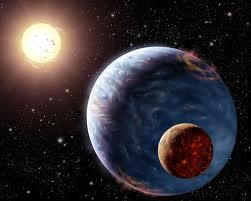
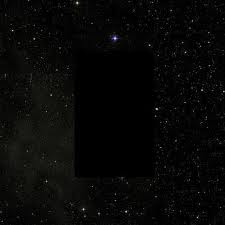

NIBIRU O PLANETA X
Este planeta possui vários nomes, veja:
- o “abominável da desolação” de Jesus,
- a “abominação desoladora” do profeta Daniel,
- a “grande estrela ardente com um facho, chamada Absinto” do Apocalipse de João,
- a “grande estrela“, “o grande rei do terror“, “o monstro” ou “o novo corpo celeste” de Nostradamus,
- o “astro Intruso” ou “planeta higienizador” de Ramatis,
- o “planeta chupão” citado por Chico Xavier,
- o "segundo sol" de Cássia Eller,
- ou o “Planeta X” procurado pelos astrônomos,
- ou o “12º planeta” de Zecharia Sitchin,
- ou o “Nibiru/ Marduk” dos Sumérios,
- ou ainda o “Hercólubus” da turma da Gnose?
Hercólubus é um suposto planeta, descrito pelo autor New Age Joaquín Amortegui Valbuena (conhecido pelo pseudônimo de V. M. Rabolú), em seu livro Hercolubus or Red Planet. Segundo ele, esse planeta estaria se aproximado perigosamente da Terra, como no passado, quando teria destruído Atlântida. Rabolu alega que Hercólubus se aproximará novamente da Terra e que a única forma da humanidade se salvar do cataclismo seria a eliminação dos defeitos psicológicos e a projeção astral consciente.
Acredita-se que ele influencia a órbita da Terra, por estar posicionado perpendicular ao nosso planeta. Por isso, estariam ocorrendo as alterações nas marés, inundações, furacões, ciclones etc. As órbitas da Terra e também da Lua começariam a ficar desestabilizadas pela influência do Planeta Chupão. Segundo o astrônomo chileno Carlos Muniz Ferrado, o Planeta Chupão está caminhando para nosso sistema solar. De qualquer maneira, é difícil traçar a rota deste corpo celeste porque ele estaria caminhando em direção à Terra sem deslocar-se para os lados.
A descoberta
Plutão foi descoberto em 1930 pelo astrônomo estadunidense Clyde Tombaugh, sua lua em 1978. A análise de Plutão mostra que determinadas características da órbita deste planeta e as órbitas de Urano e Netuno só podem ser explicadas pela existência de um outro planeta desconhecido, que deveria ser muito maior do que Plutão e muito maior que a Terra.
É então que descobriram o que estava causando o forte campo gravitacional em nossa órbita, um planeta cinco vezes maior do que a Terra, já descoberto antes pelos antigos sumérios, ao qual deram o nome de Nibiru. Os astrônomos conhecem este planeta desde 1985.
Mas, depois de descoberto aparentemente a NASA não quis revelar a gravidade que este planeta poderá causar á Terra. Eles então dissimularam e disseram que haviam descoberto somente mais um simples cometa em nosso sistema solar. E é óbvio que se este planeta realmente é, o que muitos acham que é, a NASA deve manter ele sob constante observação. E o governo esconde tudo porque não quer que estas informações se tornem parte do conhecimento público.
Mistério no mapa do Google Sky. Seria o Absinto?

Vá no Google Sky e na barra de busca digite o nome da constelação de virgem: “Virgo” ou “Virgem”
Link: http://www.google.com/sky/
Depois movimente a tela através do mouse até achar as coordenadas à seguir:
5h 53m 27s 6 10 58
O vídeo abaixo mostra através de outro site o que o Google estaria escondendo.